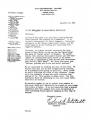
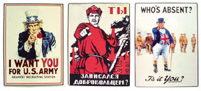

Ezennel folytatom a nagy
érdeklõdést kiváltott, A cionista
terror kronológiája címû írás magyarra fordítását. Nehéz felfogású
ellenségeink kedvéért ismét jelzem, hogy ez nem saját szerzeményem, hanem egy bizonyos Viktor
Wolzek nevû úriember munkája. Tartalmán végrehajtottam néhány korrigálást, mert
helyenként pontatlanságokat tartalmaz, például a XIII. században "Nagy-Britannia"-ként
említi Angliát. Az ilyen elírásoktól függetlenül a leírt események mind valósak. A
kommentárok a szerzõtõl származnak, az enyémek [szögletes
zárójelben, dõlt betûkkel] olvashatóak, bár elég ritkák.
Következzék a
cionista nyomulás története a XX. század elsõ felébõl, 1900-1950 között.
1901 Szeptember 6-án
Leon Czolgosz radikális aktivista meggyilkolja William McKinley amerikai elnököt.
Czolgosz az anarchista zsidó, Emma Goldman mozgalmának tagja. McKinley halála után a
szabadkõmûves Theodore Roosevelt lett az elnök, McKinley második ciklusának
alelnöke.
1901 Az orosz
kultuszminisztert, Bogolepovot egy zsidó merénylõ gyilkolja meg.
1903 Bogdanovicsot, az ufai körzet
orosz kormányzóját egy zsidó merénylõ gyilkolja meg.
1903 Az Orosz Szociáldemokrata Párt megtartja
"második kongresszusát" Londonban. Egyesítenek számos marxista csoportot. Bár ez
hivatalosan már 1898-ban is megtörtént, de gyakorlatilag az egység nem jött létre. A
kongresszuson hatvan küldött vesz részt, ám ebbõl csak négyen orosz munkások, a többiek
valamennyien zsidó értelmiségiek. A párt alapítói a következõ szervezeteket
képviselték: Zsidó Liga, Grúz Szociáldemokraták, Lengyel Szociáldemokraták - ezt a
hírhedt zsidó nõ, Rosa Luxemburg vezette - és a Munkások Egyenlõségéért Küzdõ
Egyesület, röviden Iszkra (Szikra), Lenin vezetésével. Itt kezdõdött a szakadás a
zsidó Martov vezette mensevikek és a Lenin vezette bolsevikek között. Az egyesült
párt szinte teljesen zsidó irányítás alatt állt, csak a középvezetõk közt akadtak
gójok. Lenin a kevés nemzsidó vezetõ egyike volt, de õ is egy zsidó nõt, Krupszkaját
vette feleségül, és gyakran beszélt büszkén zsidó származásáról és örökségérõl. A
Zsidó Liga és a Lengyel Szociáldemokraták voltak a párt harmadik és negyedik
legerõsebb alkotói, általában a mensevikeket támogatva, ám 1917-re felszippantotta
õket a bolsevik oldal. A pártot és az államot alkotó zsidók, eredetüktõl
függetlenül, egyetlen szervezetnek tekintették magukat, amelyet Jovkomnak
neveztek.
1904 Vlacseszlav Plehve orosz
külügyminiszter életét veszti egy bombamerényletben, amelyet Jegor Sazonov zsidó személy
követ el. A miniszter 1903-ban a következõt mondta Ogyesszában egy zsidó
küldöttség elõtt: "Nyugat-Oroszországban a forradalmárok
vagy kilencven százaléka zsidó, és Oroszország más részein is igen gyakran -
összességében úgy negyven százalékban. Nem titkolom Önök elõtt, hogy a forradalmi
mozgalom aggaszt bennünket, de tudniuk kell, hogy ha Önök nem tartják vissza
fiatalságukat a forradalmi eszméktõl, el fogjuk lehetetlenítani az Önök helyzetét
olyannyira, hogy az utolsó szálig el kell hagyniuk Oroszországot!"
1904/1905 Jacob Schiff New York-i zsidó bankár több millió dollárt kölcsönöz
Japánnak az orosz-japán háború költségeinek fedezésére. Ugyanakkor pénzügyi
kapcsolatait felhasználva megakadályozza, hogy Oroszország is kölcsönökhöz
juthasson, ezzel végveszélybe sodorva a zsidókhoz mindig is ellenségesen viszonyuló
Romanov-dinasztiát.
1905 Az orosz cár nagybátyját, Szergej nagyherceget meggyilkolja
egy zsidó merénylõ.
1906
Dobrasszov orosz
tábornokot meggyilkolja egy zsidó merénylõ.
1906 Egy újabb társadalmi mozgalom, a zsidó
Sigmund Freud által megalapozott "pszichoanalízis"-tudomány teljesen zsidó irányítás alá
kerül. 1906-ra a mozgalom 17 tagja mind zsidó.
1907 Májusban a National Geographic Magazine cikket
közöl arról, hogy az oroszországi forradalmárok szinte valamennyien zsidók. Idézet a
cikkbõl: "... a forradalmi vezetõk szinte mindegyike a zsidó fajhoz tartozik, és a
leghatékonyabb forradalmi szervezet a Zsidószövetség... A kormány egyre többet
szenved ettõl a fajtól és mindattól, ami hozzájuk köthetõ. Valahányszor egy-egy
elkeseredett tettre kerül sor, annak elkövetõje mindig zsidó. E fajnak aligha akad
egyetlen, hazájához lojális tagja is Európában..."
1909 Az Egyesült Államokban megalapítják a NAACP-t (National
Association for the Advancement of Color People, azaz Nemzeti Egyesület a Színesbõrûek
Felemelkedéséért), fõleg zsidók, illetve egy mulatt, W.E.B. Dubois. Bár a közvélemény úgy
tudja, a NAACP egy fekete polgárjogi szervezet, de a három elsõ elnök mind zsidó
volt: Noel Springarn, Arthur Springarn és Kivie Kaplan. A NAACP-hoz leginkább
köthetõ arc az ötvenes-hatvanas években feltûnt, fekete Roy Wilkinsé. Wilkins volt a
mozgalom frontembere, úgy téve, mintha annak elnöke lenne, noha nem az volt, hanem
"nemzeti titkára". Az elnökök egészen a hetvenes évekig zsidók voltak, az elsõ
fekete elnök Benjamin Hooks volt. Amint fekete lett a mozgalom elnöke, többé nem lehetett
hallani a "nemzeti titkár" pozíciójáról. Hogy miért? Mert a feketék nem támogatták a
NAACP folyamatos vinnyogását és a fehérek kulturális kiszorítását, ezt csak a zsidók
akarták. A feketék csak mellékszerepeket játszottak, ma pedig a "fekete büszkeség"
forrásaként emlegetik az egyesületet, vagy nem is ismerve, vagy letagadva annak zsidó
gyökereit.
1909 Thomas Edison filmstúdiója beperli a Warner Bros zsidó tulajdonosait
filmkamerája szabadalmi jogainak megsértéséért. A Warner végül Los Angelesbe
menekül, és megalapítják a Warner Bros filmstúdiót, Edison szabadalmazott
technológiájának ellopásával.
1911 Dimitrij Bogrov, egy gazdag zsidó ügyvéd fia, a Szocialista
Forradalmi Párt tagja agyonlövi Pjotr Sztolipint, az orosz miniszterelnököt a kijevi
operában. Sztolipin a forradalom elõtti Oroszország érdekes figurája volt. A jelentõs
reformok szorgalmazása mellett kíméletlenül küzdött a zsidó terroristák és forradalmi
agitációjuk visszaszorításáért. A gyilkost 1911 szeptember 11-én
felakasztották.
1911 Taft amerikai szenátor apja, William Howard Taft amerikai elnök felháborodást okoz az
oroszellenes zsidó vezérek - például Jacob Schiff - körében, amikor megtagadja egy
szerzõdés felrúgását az "antiszemita" Oroszországgal. Schiff nem fogadja Taft
kézfogását a kijelentés után.
1913 Megalakul a Rágalmazásellenes Liga (Anti-Defamation League,
ADL), avagy a B'nai-B'rith, azzal a kizárólagos céllal, hogy a zsidó törekvésekrõl
negatív véleményt megfogalmazó embereket elhallgattassa. Az ADL tulajdonképpen egy zsidó
bûnszövetkezet. Alapítása óta a számtalanszor hiteltelenné vált ADL többek között a
következõ eredményeket érte el. Sikerült elérniük Clinton elnöknél, egy egyszerû levél
által, amit Abe Foxman, az egyesület elnöke írt, hogy Marc Rich nagystílû csalót töröljék
az amerikai körözési toplistáról. Titkos dokumentumokat loptak a San Francisco-i
rendõrségtõl, majd megnyerték az ellenük indított pert, "újságírói jogukra" apellálva,
ami a dokumentumok kiszivárogtatását illeti. Elvesztettek egy tízmillió dolláros
rágalmazási pert, amit egy Colorado-i házaspár indított ellenük. Mindezek ellenére az ADL
2002-ben, a szeptember 11-i események után az FBI formális partnere lett a "belföldi
terrorizmus" elleni harcban. Ezt a lehetõséget azóta is a fehér nacionalista
csoportok letörésére használják.
1914 Augusztus 4. Az európai történelem legborzalmasabb napja -
megkezdõdik a Nagy Háború.
1915 Zsidók megalapítják az Egyesült Államok elsõ valódi marxista
kommunista pártját, a National Workmen's Committee-t New York City-ben, amelynek
tagjai fõleg különbözõ zsidó csoportok radikális aktivistái lesznek.
1915 Franz Boas "kultúrantropológus"
és követõi irányításuk alá vonják az Amerikai Antropológiai Társaságot, amely ezután
azt az álláspontot képviseli, hogy fajok nem léteznek, tehát a fajok közti
pszichológiai, különösen intelligenciabéli különbségek sem. Boas ideái világszerte
elterjednek, riasztó eredményekkel.
1915-16 Az "ifjútörök" kormány végrehajtja az örmény népirtást. Másfél
millió örményt gyilkolnak meg az Oszmán Birodalomban élõ két és fél millióból. A
népirtást az Ifjútörök Párt Központi Bizottsága terveli ki, amelynek Mehmed Talat,
Izmail Enver és Ahmed Dzsemal a vezetõi. Ez egy rasszista csoport, akiknek
ideológiai alapelveit Zia Gökalp, Dr. Mehmed Nazim és Dr. Behaeddin Shakir fektették le.
Persze ez nem fontos, mert az örmények nem zsidók. Ma nincsenek örmény
holocaust-múzeumok, nincsenek errõl tévésorozatok, és Amerika sem küld évi kétmilliárd
dollárt Örményországnak. A török bankokat nem zsarolják örmény jogászok. Nem tanítják az
örmény holocaustot az amerikai középiskolákban. A törököket nem nevezik
"antiörménynek", ha nem szeretik az örményeket. Ez a szó nem is létezik. És egyetlen
marxista zsidó sem írt könyvet arról, hogy az örményellenesség mentális
rendellenességre lenne visszavezethetõ. Mellesleg számos nyelvészeti és régészeti
kutatás valószínûsíti, hogy az indoeurópai népek õshazája Örményország. Ezáltal az
örmények nagyon érdekes nép - sokkal inkább, mint a Judeából elindult, összevissza
vándorló, etnocentrikus törzsek.
1916 Louis Brandeis, zsidó cionista bírót az amerikai legfelsõbb
bíróság elnökévé választják. Õ az elsõ, de nem az utolsó ilyen elnök. Késõbb
Roosevelt közeli barátja lesz.
1917 A
Balfour-nyilatkozatban a brit kormány angliai zsidók nyomására a zsidóknak ígéri
Palesztina földjét. Ennek hatására lép be az Egyesült Államok a háborúba.
(Megjegyzendõ, hogy a nyilatkozat hatása már azelõtt megmutatkozott, hogy közzétették
volna!)
1917 Az
Egyesült Államok belép az elsõ világháborúba. A Balfour-nyilatkozatot elküldik az Egyesült
Államoknak, ahol Louis Brandeis módosításokat eszközöl rajta, mert úgy látja, hogy
érdekek ütköznének, ha eredeti formájában maradna. Amerikának amerikaiakra van
szüksége, akik amerikai érdekeket védenek, nem pedig cionista zsidókra, akik
Amerikát eszközül használják céljaik - vagy késõbb Izrael állam céljainak -
elérésére.
1917 Novemberben - a régi orosz
naptár szerint októberben - kirobban az oroszországi forradalom. A fõleg zsidók
vezette kommunisták végül milliókat gyilkolnak meg és üldöznek el. New York-ból
rengeteg zsidó vándorol Oroszországba, hogy segítse a forradalom
kibontakozását.
1918 Dr. George A. Simmons, az
Oroszországi Metodista Misszió volt fõfelügyelõje az Egyesült Államok Szenátusának
Igazságügyi Bizottsága albizottsági meghallgatásán, a 65. Kongresszus során a
következõket mondta a bolsevik propagandával kapcsolatos ülésen: "Igazán meglepõ volt, szenátor úr, hogy oly kevéssel az
1917-es nagy forradalom után máris zsidók tömegei álltak az utcán padokra és
szappanosládákra, rojtosra beszélve a szájukat. Meg is jegyeztem a nõvéremnek, hogy
tulajdonképpen mit keresünk mi itt? Ez az egész egy jiddis dolog."
1918 Elkészül az elsõ Warner Bros-film, egy
agitprop-mozi, Négy évem Németországban
címmel.
1918 Az USA Külügyi Bizottsága
meghallgatásokat tart, majd jelentést ad ki arról, hogy kik pénzelik az orosz
forradalmat. Minden támogató bank zsidó tulajdonú, s ezek közül a legnagyobb a Nya Banken
svéd pénzintézet, amelynek Olof Aschberg a tulajdonosa. Ez a bank szoros kapcsolatban
áll a New York-i Jacob Schiff-fel, aki szintén jelentõs összegekkel támogatja az orosz
kommunistákat.
1918 Egy orosz zsidó,
Jakov Blumkin meggyilkolja Mirbach bárót, a moszkvai német nagykövetet.
1918 A moszkvai amerikai fõkonzul táviratot küld
Washingtonba, amelyet a Külügyminisztérium 861.00/1757 számon iktat. Ebben leírja az
általános helyzetet az orosz városokban: "A zsidók vezetik a helyi önkormányzatokat. A
zsidóellenesség növekszik a helyi lakosság körében, és a közeledõ németekre
reménykedve tekintenek." Errõl a levélrõl Dr. William Pierce The Letter They Wouldn't Answer címû cikkében lehet bõvebben
olvasni. (Free Speech, 1995 január, I. kötet, 1. szám)
1918 A kommunista zsidók meggyilkolják a Romanov uralkodócsalád
tagjait, köztük négy fiatal lányt, Anasztázia, Olga, Tatjána és Mária grófnõket. A
mészárlást Jákob Jurovszkij vezeti. A gyilkosságokat különös kegyetlenséggel,
szadista módon hajtják végre. Errõl William Pierce The
Romanovs, Child Porn and 'Hate' Laws címû cikkében olvashatunk (Free Speech, 1998
augusztus, IV. kötet, 8. szám). Idézve Robert Wilton Londonban, 1920-ban a Thornton
Butterworth Limited által kiadott könyvébõl: "A cár
meggyilkolását egy zsidó, Szverdlov tervezte el... és Golosekin, Sziromolotov,
Szafarov, Voikov és Jurovszkij zsidó gyilkosok hajtották végre. Ez nem az orosz nép,
hanem idegen betolakodók mûve volt."
1918-tól Milliókat gyilkolnak meg a kommunisták Oroszországban.
Milliókat zárnak börtönbe és nyomnak el. Megnyílnak a világ elsõ koncentrációs
táborai. (Ford. megj.: ez helytelen, mert a britek
hozták létre az elsõ haláltáborokat 1901-ben, a búr háborúban.)
1918 Ahogy a német háborús
veszteségek folyamatosan emelkednek, a zsidók vezette Német Szociáldemokrata Párt mindent
megtesz, hogy defetista légkört hozzon létre, miközben folyamatosan a kormány ellen
agitál, pontosan úgy, ahogy az orosz kommunisták tették korábban. Lázadás tör ki a
kieli haditengerészeti támaszponton november 3-án, amit a szociáldemokraták
kezdeményezte zavargások követnek. A császár lemond a trónról november 9-én, és a
szociáldemokraták kikiáltják a szocialista köztársaságot.
Két napra rá
Németország fegyverszünetet köt az antanttal. Ezután olyan lépés következik, amely a
németek nagy részét szembefordítja a zsidókkal: a német fegyveres erõk demobilizálása.
Amikor a német katonák visszatérnek német földre, a szociáldemokraták parancsot adnak
a leszerelésükre, mert féltek, hogy a hadsereg beleavatkozik a remélt népi
forradalomba. November 11-én Németország még mindig a világ egyik legütõképesebb
hadigépezetével rendelkezett. Harminc nappal késõbb semmilyen haderejük nem volt. Így
ahelyett, hogy Wilson tizennégy békepontjáról tárgyalhattak volna, egy tehetetlen és
megalázott Németország a Versailles-i szerzõdés elfogadására kényszerült.
Amint
a hadsereg leszerelése megtörténik, a szociáldemokrata párt szélsõséges elemei Rosa
Luxemburg vezetésével kidolgozzák a hatalom átvételének az oroszországihoz hasonló
módszerét. A "spartakista" csoportok 1919-ben megkísérlik a forradalmi kormány
megbuktatását, amihez Oroszország nyújt segítséget. A puccsot véres utcai harcokban
leverik, vezetõit, Rosa Luxemburgot és Karl Liebknechtet pedig elfogják és késõbb
kivégzik. Halála után a Harmadik Internacionálé a párt vezetését a szintén zsidó Karl
Radeknek adja át. 1924-ben Ruth Fischer lesz a pártvezetõ.
1919 A történelem során elõször egy egész európai nemzet egy zsidó
uralma alá kerül. Kun Béla (Kohn Áron) megalapítja a világ második kommunista kormányát
Magyarországon, miután visszatért hitsorosaitól Oroszországból. Százharminchárom napig,
március 21-tõl augusztus 1-ig Kun Béla és elvtársai rémuralom alatt tartják a magyar
nemzetet, amelynek borzalmait kevés történelmi esemény volt képes túlszárnyalni.
Magyarország gyakran szenvedett idegen megszállástól, de a legrosszabb idõket egy zsidó
bennszülött hozta rá. Ha legközelebb valaki a magyarok antiszemitizmusáról vinnyog - vagy
"amerikainak" mondva magát, politikai babérokra hajt - csak említsük meg neki Kun
Béla nevét. A Dodd, Mead Co. által kiadott The 1919
Yearbook 587. oldalán a következõ olvasható: "Kun
Béla kormánya csaknem teljesen zsidókból állt, és az államgépezet szinte minden
pozícióját is õk töltötték be. Eleinte a kommunisták együttmûködtek a szocialistákkal, akik
nem voltak szélsõséges radikálisok, hanem inkább más országok szociáldemokratáira
vagy munkásszövetségeire emlékeztettek. Kun Béla azonban nem találta meg számítását
velük, és inkább a zsidókra támaszkodott, hogy egy egészében zsidó bürokráciát
építsen ki."
1919 A Milwakuee-ben született Golda Meir - eredeti nevén Goldie
Mabovitz Myerson - a New York-i Szabadság-szobornál pózol. A zsidó az emberiség
kaméleonja. Amikor Amerikában vannak, a hûségre és a szabadságra apellálnak, aztán a
világ másik oldalán megalapítják a csak zsidók vezette etnikai államot.
1919 Németországban megalakul a Nemzetiszocialista
Párt, fõleg hogy a zsidók vezette kommunista és pénzügyi társadalmi befolyás ellen
küzdjön. Ideológiája a nacionalizmus és a "jobboldali" szocializmus keveréke, ellentétben a
"baloldali" szocializmussal, azaz az egalitarianizmussal, amely szerint az államnak
mindenkit egyenlõvé kell tennie. A "náci párt" megnevezés 1920-ig nem
létezik.
1919 Egy, az Egyesült Államoknak
megküldött brit hírszerzõi jelentés szerint az orosz forradalmat fõleg zsidók
vezetik.
1919 A Lee Overman szenátor által
vezetett amerikai kongresszusi meghallgatás során, amelynek témája az európai
alkohol-kereskedelem, szintén leszögezik, hogy az orosz forradalmat zsidók irányítják.
(A jelentés címe: Brewing and Liquor Interests and German and Bolshevik Propaganda, 3.
kötet, 66. Kongresszus, 1. szakasz, S. Docs. V.4, n.64, eskü alatt tett vallomás a
Kongresszus elõtt. Dátum: 1919 február 11 és március 10 között. S.Res:
439/469).
1920 Amerika és Európa minden
nagyobb újságja zsidó tulajdonban, s ugyanígy a bankok és a könyvkiadó vállalatok. Azok,
akik ezt felismerik, "antiszemitának" nyilváníttatnak.
1920 Február 8-án Winston Churchill figyelmezteti a világot a zsidók jelentette
politikai és kulturális veszélyre Cionizmus és bolsevizmus: Harc a zsidó lelkekért címû
cikkében. (Megjelent: 1920 február 8, Illustrated Sunday Herald, London.) Churchill
ebben a cikkben azt írta: "tény, hogy a zsidók állnak egy világméretû összeesküvés
elõtt, amelynek célja a civilizáció megbuktatása."
1920 Henry Ford autógyáros magándetektíveket fogad, hogy vizsgálják meg a
zsidók hatalmát Amerikában. Az eredmény olyannyira riasztó, hogy azonnal kinyomtatja azt
saját lapjában, a The Dearborn Independent-ben. A lapot késõbb betiltják. Henry Ford
igazi amerikai hazafi, akit megbüntettek az igazság kimondásáért.
1920 után Kommunisták - fõleg zsidók - épületeket
gyújtanak és robbantanak fel Németországban, remélve egy, az oroszországihoz hasonló
forradalom kitörését. A rendõrség számos kommunistát letartóztat, több száz fegyvert és
jelentõs mennyiségû robbanóanyagot is lefoglalva.
1922 Megjelenik az elsõ amerikai kommunista újság, a Freiheit, kizárólag jiddis nyelven.
1922 Lenin agyvérzést kap májusban, majd egy újabbat
decemberben. A párt vezetését a Joszif Sztálinból és két zsidóból, Zinovjevbõl és
Kamenyevbõl álló triumvirátus veszi át. Sztálin késõbb kiszorítja a vezetésbõl a másik
kettõt, csakúgy, mint a szintén zsidó Trockijt (Lev Davidovics Bronstein), és a párt
egyszemélyi vezetõjévé válik. Lánya, Szvetlana férjhez megy egy zsidóhoz, Mihail
Kaganovicshoz, Lazar Kaganovics Politbüro-tag fiához. Sztálin fia, Vaszilij a zsidó
Szvetlana Molotovot veszi feleségül, Molotov külügyminiszter lányát, aki egyébként nem
zsidó, de a felesége az.
1923 A Berlinben mûködõ 161 bankból 150 zsidó tulajdonban
van, ezzel alátámasztva a korai nácipárt állítását, miszerint a zsidók irányítják
Németországot.
1923 Karl Radek és Otto
Marquardt zsidó kommunisták marxista felkelést szítanak Hamburg Barmbeck negyedében. Nyolc
rendõrt meggyilkolnak, és számosat megsebesítenek.
1923 A félzsidó Lister Hill (1894-1984) megkezdi Amerika-romboló politikai
karrierjét. A demokrata párt kongresszusi képviselõje lesz (1923-1937), majd szenátor
(1938-1968), a New Deal irányzat elkötelezett híve. A New Deal és a második világháború
eredményezte Amerika elsõ zsidó forradalmát. A második a hatvanas évek "polgárjogi
mozgalma" volt.
1923 Ahogy a zsidók tették
kommunistává Oroszországot, milliók halálát okozva, nagy szerepet játszottak a kínai
forradalomban is. A kínai fordulat kulcsembere Mihail Markovics Borogyin (1884-1951) volt,
aki szovjet tanácsadóként érkezett Kínába 1923-ban. Eredeti neve Mihail Gruzenberg,
Rigában, Lettországban született. A másik kulcsember Adolf Abramovics Joffe (vagy Ioffe,
Yoffe, 1883-1927), aki 1922 augusztusában utazott Kínába. Hivatalos titulusa: Különleges
meghatalmazott orosz nagykövet. Joffe közremûködésével készült a Szun-Joffe kiáltvány
1923 januárjában. Egy harmadik zsidó, aki Kína kommunizálása mögött állt, Grigorij N.
Volickij (1893-1953), a Harmadik Internacionálé (Komintern) követe. Az õ eredeti neve
Zarkin volt.
1924 A zsidó Maurice
Samuel részletesen ír a zsidó hatalomról és gyakorlatról Ti, gójok címû könyvében. Kevesen figyelnek fel rá.
1924
A zsidó kongresszusi
képviselõk vezetõ szerepet játszanak a bevándorlási törvények megváltoztatásában, ami
lehetõvé teszi, hogy rengeteg Európán kívüli bevándorló érkezzen az Egyesült Államokba.
Ennek célja egy multikulturális ország létrehozása, hogy az "antiszemitizmus" ne
terjedhessen el úgy, mint más országokban.
1926 A zsidó bérgyilkos, Shalom Schwartzband meggyilkolja Symon Petlura
ukrán nacionalista vezetõt Párizsban. Petlura vezette korábban az ukrán hadsereget a
bolsevikok ellen.
1927 Ifj. Henry Ford
bocsánatot kér a zsidóktól korábbi "antiszemita" kijelentéseiért, miután a Ford cég éveken
át komoly politikai és pénzügyi nyomás alá került zsidó és zsidóbarát csoportok
részérõl. Késõbb kijelentette, hogy a bocsánatkérést nem õ írta, csak a nevében
fogalmazták.
1928 Megjelenik Margaret Mead
Szamoán felnõni címû könyve, a huszadik századi
etnográfia legfontosabb mûve, amely kiáll a kulturális determinizmus, és az abból fakadó
egalitariánizmus és relativizmus elmélete mellett. Mead a zsidó Franz Boas pártfogoltja
volt, és õ felügyelte Mead munkáját Szamoán. Az utóbbi évtizedben Mead munkásságát erõsen
megkérdõjelezték, fõleg Derek Freeman ausztrál antropológus, aki szerint fõleg a szamoai
emberek szexuális szokásait illetõen tévedett sokat. Gyakorlatilag Mead munkája gyenge és
zavaros. Az egyetlen kérdés ma már az, hogy vajon szándékos tudományos csalás volt-e.
Akkoriban azonban csak az volt fontos, hogy Mead következtetései összhangban voltak mentorának
ideológiai felfogásával. Egy évvel késõbb meg is kapta PhD fokozatát a Columbia
Egyetemen.
1928 November 4-én Arnold Rothstein
gengsztert, a Meyer Lansky & Co. tanácsadója, aki az 1919-es Black Sox
baseball-bundabotrányban vezetõ szerepet játszott, visszalép egy befektetéstõl, ezért
meggyilkolja az egyik "Nigger Nate". A történetet John Sayles rendezõ feldolgozta a 8 Men
Out címû mozifilmben.
1929 Smith Brookhart
amerikai szenátor nyilvánosan kijelenti, hogy "Hollywoodot
egy rakás zsidó irányítja."
1929 Németországban a zsidó Kurt Tucholsky kiadja Deutschland,
Deutschland über alles címû röpiratát, amelyben támadja az egyházakat, a rendõrséget, a
jogrendszert, Hindenburgot, a szociáldemokratákat, a kereskedelmi unió vezetõit, az
iparosodott német középosztályt és a legmagasabb rangú német vezetõket, miközben a
pacifizmust és a szexuális promiszkuitást élteti. Tucholsky az egyik legismertebb weimari
zsidó szatirikus író volt, de nem az egyetlen. Rendszeresen bírálta és elítélte a német
hagyományokat és kultúrát, miközben abból a gazdagságból élt, annak a toleranciának a
védelme alatt, amit ez a kultúra teremtett (értsd: parazita). A weimari szatirikusok
katalizátorként mûködtek a német nép elidegenülésének folyamatában, majd néhány évvel
késõbb az arcukra fagyott a vigyor. Tucholsky 1929-ben Svédországba költözött. Könyveit
1933-ban elégették Németországban, õ maga pedig 1935-ben öngyilkosságot követett el.
Manapság mindenki azt firtatja, ugyan miért utálták annyira a németek a zsidókat. Ez az
alak fényes példája az okoknak, és nem csoda, hogy senki nem hallja a nevét, hacsak nem
német történelmet hallgat egy megfelelõ egyetemen.
1930
után A zsidó Lazar Kaganovics felügyeli 20 millió orosz keresztény
meggyilkolását.
1930 Coughlin atya, azaz "Rádió
atya" megkezdi rádiómûsorát az Egyesült Államokban. Eleinte csak a kommunistákról beszél,
késõbb azonban a zsidók szerepérõl is a kommunizmus terjedésében. Ahogy az várható volt,
a zsidók megpróbálják elhallgattatni.
1930 A brit kormány kiadja a Passfield-nyilatkozatot, amely korlátozza a
zsidó bevándorlást Palesztinába az arabok gazdasági érdekeinek védelmében. Lord Passfield
a következõt írta: "A zsidó hurrikán folytatódik... egészen
megvadulni látszanak izgalmukban és haragjukban." Louis Brandeis a Rotschildok és a
Warburgok nevében figyelmezteti, hogy talmudi bosszút fognak állni, és minden zsidó
pénzt kivonnak az angol bankokból. Passfield felesége, a szocialista Beatrice Webb erre
felteszi a kérdést: "Miért van az, hogy mindenki, akinek zsidókkal akad dolga, végül
elõítéletes lesz a zsidókkal szemben?" Azt is megkérdi, hogyan lehetséges a Szentföld
átengedése azoknak, akik "keresztre feszítették a Názáreti Jézust, és azóta is, korokon
át tagadták, hogy õ Isten fia lett volna." (Forrás: N. Mackenzie: The Letters of Sidney
and Beatrice Webb.)
1930-as évek A legtöbb
gyilkosságot elkövetõ amerikai bûnszövetkezet, a Murder Inc. minden tagja, kivétel nélkül
zsidó.
1933 A Kommunizmus Németországban címû könyv megjelenése. Ez az értekezés
bizonyítja, hogy Németország már jóval Hitler hatalomra kerülése elõtt is a kommunista
zsidók ostroma alatt állt. A zsidó marxisták gyakran kezdeményeztek három-négy napos
zavargásokat a német városokban. A nácik ezekben az utcai harcokban önvédelembõl léptek fel,
bármit is állít a modern történelemoktatás.
1933 Március 24-én, a Daily Express címû angol lap
beszámol róla, hogy a zsidók "hadat üzentek" Németországnak az Amszterdamban megrendezett Zsidó
Bojkott-konferencián, azzal a deklarált céllal, hogy Németországot pénzügyi eszközökkel
"térdre kényszerítsék". Jegyezzük meg, hogy ez évekkel az állítólagos holocaust elõtt
történt! Válaszképpen Németországban az állam ellenségeinek nyilvánítják a zsidókat, és ez
lesz táborokba gyûjtésüknek elsõ számú oka.
1933 A német zsidókat eltiltják az állami közhivatali állásoktól, a német
kultúrával szembeni ellenséges hozzáállásuk következményeként.
1933 A zsidók az
Anti-Defamation League vezetésével újabb lépéseket tesznek az amerikai kultúra és szólásszabadság
ellen. A szélsõséges szervezet egy levélben nyíltan követeli Madison Grant, a New York-i
Zoológiai Intézet elnökének Egy kontinens
meghódítása címû könyvének betiltását, amely nyilván nem felel meg a zsidó
érdekeknek. Figyeljük meg a hideg, számító felszólítást a könyv kritikusainak
elhallgattatására, mert "minél kevesebb szó esik a könyvrõl, annál nehezebb lesz az
eladása." Ennyit arról, hogy a könyveket vajon milyen értékek, relevancia vagy minõség
elve szerint tárgyalja a zsidó média. Az ADL levele nyilvánvalóvá teszi, hogy már akkor is
eltökélten megpróbálták elfojtani azokat a hangokat és tudományos elveket, amelyek
megakadályozthatták volna a a XXI. század elejére kifejlõdõ szociális és politikai
problémákat, amelyekkel ma a fehér társadalom kénytelen szembesülni.
1933 Adolf Hitler hatalomra kerül Németországban. Õ lesz az
elsõ államférfi a modern Nyugat történetében, aki fizikailag is megpróbálja megállítani a
zsidók vezette kommunizmust és az európai kultúra feletti zsidó dominanciát. (A valós
történelmi kontextusban mindjárt nem hangzik olyan veszett gonosznak, mint amit Spielberg
sugall róla, ugye?)
1933 Franklin D. Roosevelt
amerikai elnök, aki maga is zsidó leszármazott, egyezményt köt a Szovjetunióval, a
Kongresszus jóváhagyása nélkül, és engedélyezi számukra nagykövetség és konzulátusok
megnyitását az Egyesült Államok területén. Ezzel hivatalosan elismeri a Szovjetuniót,
annak ellenére, hogy számos amerikai tisztviselõ figyelmezteti, hogy ezzel egy illegális,
erõszakkal hatalomra jutott kormányt legitimizál, amely elnyomja és pusztítja saját népét.
Roosevelt azonban baloldali érzelmû volt, és szimpatizált a marxizmussal. Emlékezzünk
hírhedt mondására: "Számos legjobb barátom
kommunista." (Idézet felolvasva 1950 szeptember 22-én, kongresszusi jegyzõkönyv
részeként.)
1933 Május 23-án Louis T. McFadden
kongresszusi képviselõ formálisan vádat emel a Federal Reserve Bank (az USA állami
jegybankja) igazgatótanácsa, a Controller of the Currency (a pénzügyi ellenõrzõ hivatal
elnöke) és a Secretary of United States Treasury (a kincstár titkára) ellen több
bûncselekmény, közte, de nem kizárólag, összeesküvés, hamisítás, törvénytelen pénzváltás és
hazaárulás miatt. Beszédében, amely Speech on the Federal
Reserve Corporation címmel hangzott el, többek között ezt mondta: "Országunkban e tizenkét magánhitel-intézetet csalással és
hûtlenséggel megtévesztették azok a zsidó bankárok, akik Európából érkeztek ide, és
befogadásukért hálából aláásták Amerika közintézményeit. Ezek a bankárok pénzt vittek ki az
országból, hogy Japánt pénzeljék egy Oroszország elleni háborúban. Rémuralmat hoztak létre
Oroszországban a mi pénzünkön... Õk fizették Trockij útját New Yorkból Oroszországba, hogy
segíthessen az Orosz Birodalom lerombolásában..." (Megjegyzések a Kongresszusban, 1934 - Egy sokkoló leleplezés. Hasonmás
kiadás, 1978, Arizona Caucus Club.)
1933 Szeptember 11-én Atlantában, Georgia államban megszületik William
Luther Pierce.
1935 A német kormány megszünteti a zsidók, mint az állam
ellenségeinek állampolgárságát. (Miután "hadat üzentek" Németországnak, ez nem is
meglepõ.)
1935 Joseph Goebbels német
propaganda-miniszter antikommunista beszédet tart "A kommunizmus maszkja lehull" címmel. A
beszéd tartalma nagyon is pontos, és voltaképpen megismétli, amit korábban Winston Churchill
mondott a zsidók kulcsszerepérõl az európai kommunizmus terjesztésében. Sajnos csak a
nácik figyelnek rá. Goebbels ezen beszéde azóta is a "gyûlöletkeltés" csúcsa a zsidók
számára. Mellesleg: ha valamit a zsidók "gyûlöletkeltésnek" neveznek, az általában
igaz.
1935 Huey Long louisianai politikust
agyonlövi egy zsidó merénylõ, bizonyos Weiss, hogy ne legyen ellenfele Rooseveltnek az
újraválasztása során. Roosevelt valóban újból megnyeri az elnökválasztást.
1936 Leon Blum, egy marxista, németgyûlölõ zsidó lesz
Franciaország miniszterelnöke. Radikális politikai elképzeléseivel oly nagy visszatetszést
kelt, hogy késõbb a kollaboráns Vichy-kormány mottója is ez lesz: "Inkább Hitler, mint Blum."
1936 Wilhelm Gustloff német tisztviselõt Svájcban meggyilkolja egy 17 éves
zsidó, David Frankfurter, állítólag azért, mert Gustloff széles körben terjesztette a Cion
bölcseinek jegyzõkönyvét, egy állítólagos antiszemita hamisítványt, amely leleplezi a
cionizmus világuralmi törekvéseit. (Akár zsidók írták, akár gójok hamisították, tény, hogy
a világ azóta lezajlott eseményei kétségkívül igazolták a benne írtakat. A Jegyzõkönyv
lényege egyébként sem a szerzõje, hanem az abban leírt jelenség.)
1936-37 Németország, Olaszország és Japán jogos önvédelmi
lépésként aláírják az Antikomintern Paktumot, egy antikommunista egyezményt. Különös módon a
Roosevelt vezette USA nem csatlakozik, hanem a tömeggyilkos Sztálint támogatja, aki
ekkorra már több, mint tízmillió embert pusztított el.
1936 Az Egyesült Államok megemelt vámmal sújtja a német árucikkeket, és
csak azokat. Érdekes, a szovjet árucikkekre nem vetnek ki ilyen terhet, noha Sztálin bûnei
ekkor sokkal súlyosabbak, mint Hitleréi.
1937 Októberben Roosevelt egy Németország ellen indítandó lehetséges
háborúra utal egy beszédében, ami nagyon messze áll korábban vallott izolacionista,
semlegességpárti álláspontjától.
1937-38 Németország több próbálkozást tesz, hogy javítsa az Egyesült Államokhoz
fûzõdõ viszonyát, de mindannyiszor elutasításra talál, köszönhetõen a félig zsidó Roosevelt
fõleg zsidókból álló tanácsadói körének.
1938 November 7-én a zsidó Herschel Grynszpan (Greenspan) meggyilkolja
Ernst von Rath-ot, a párizsi német követség hivatalnokát.
1938 November 10-én a Rath-gyilkosságon felháborodott német nácik a német
zsidókon állnak bosszút. A pogromot késõbb Kristallnacht-nak, kristályéjszakának nevezik el,
a rengeteg betört zsidó kirakat szétszórt üvegcserepei után.
1938 Stephen Wise rabbi, Roosevelt jó barátja elismeri,
hogy Hitlernek igaza van, amikor azt mondja, hogy a zsidóság nem csak vallás, hanem külön
faj. (New York - Herald Tribune, 1938 június 13.)
1938 Áprilisban a The Sign címû amerikai katolikus magazin azt írja, hogy a
zsidók vezetik a konzervatív Franco tábornok elleni hadjáratot Spanyolországban, hogy az
országot kommunista uralom alá vonják.
1939 Sigmund Freud hevesen támadja a kereszténységet, miközben dicséri a zsidókat
és a cionizmust Mózes és a monoteizmus címû
könyvében. Azt is sugallja, hogy az "antiszemiták" mentális betegek.
1939 Az Elfújta a szél
filmváltozatát elkészítõ Louis Mayer és David O. Selznick megváltoztatják a regény
történetét, így a filmben egy fehér férfi próbálja megerõszakolni Scarlettet, míg a könyvben
ez a szereplõ fekete. Szintén kimarad a filmbõl a Ku Klux Klán hazafias ábrázolása, mint a
déli fehérellenes mozgalom ellen harcoló szervezeté.
1939 Márciusban George van Horn Mosely amerikai tábornok azt mondja a New York Tribune-nek, hogy a közelgõ háború (a második
világháború) tétje "a zsidó befolyás világméretû
megalapozása" lesz.
1939 Roosevelt elnök
Felix Frankfurter kommunistapárti zsidót nevezi ki a Legfelsõbb Bíróság
elnökévé.
1939 A Zsidó Népbizottság a Jewish Examiner címû lapban közzétett hirdetésében
bejelenti, hogy koncentrált, országos kampányba kezd a "Rádió atya"-ként elhíresült Coughlin
atya ellen, ide értve a helyi hatóságokra történõ nyomásgyakorlást is Coughlin
rádiómûsorainak betiltásáért.
1939 Egy fõleg zsidó
tudósokból álló csoport, akikre riasztóan hat a náci Németország
nukleárisfegyver-kutatása, meggyõzi Albert Einsteint, hogy levelet írjon Roosevelt
elnöknek az atombomba kifejlesztésének lehetõségérõl.
1940 Coughlin atyát kiszorítják a rádióból, de továbbra is rendszeresen
kiadja hírlevelét.
1940 A Haganah nevû zsidó
földalatti hadsereg elsüllyeszti az SS Patria nevû
hajót, megölve 250 kivándorló zsidót és a 17 fõs személyzetet, hogy így ébresszen
sajnálatot a zsidók iránt, akiktõl megtagadták a beutazást a brit fennhatóság alatt álló
Palesztinába.
1940 A japán hadsereg benyomul
Indokínába. Roosevelt tiltakozik, de érdekes módon továbbra sem szól egy szót sem kommunista
barátja, Sztálin milliós tömeggyilkosságai ellen.
1940 A frankfurti marxista iskola zsidó vezetõje, Walter Benjamin elmenekül
Párizsból, mielõtt a németek megszállják, és a spanyol határ felé tart. Miután azonban egy
rendõrtiszttõl értesül, hogy a határ átlépése után a spanyolok átadják a Gestapónak, Benjamin
öngyilkosságot követ el.
1941 Charles
Lindbergh óceánrepülõ, amerikai nemzeti hõs figyelmezteti a nemzetet, hogy a zsidók olyan
indokokra hivatkozva próbálják Amerikát belerángatni a második világháborúba, amelyek nem
tükrözik az amerikai érdekeket. "Háborús uszítás helyett a
hazai zsidó csoportok inkább mindenféle módon a háború ellen kellene, hogy fellépjenek,
hiszen háború esetén õk lesznek az elsõk, akiket a következmények sújtanak. A tolerancia
olyan erény, ami a békétõl és az erõtõl függ. A történelem bebizonyította, hogy a
tolerancia nem életképes háborúban, pusztítás közepette. Néhány szélesebb látókörû zsidó
be is látja ezt, és ellenzi az európai háborúba való beavatkozást. De a többség még mindig
nem. Nagy veszélyt jelent országunkra a filmiparban, a sajtóban, a rádiózásban és a
kormányzatban elért döntõ befolyásuk... Azt mondom, hogy a brit és zsidó vezetõk, olyan
érdekek miatt, amelyek éppen olyan érthetõek az õ nézõpontjukból, mint amilyen
elfogadhatatlanok a miénkbõl, s amelyek nem amerikai érdekek, bele akarnak bennünket sodorni
egy háborúba." (A beszéd Des Moines-ben, Iowa államban hangzott el.)
1941 Roosevelt elrendeli az Egyesült Államokban minden
japán tulajdon befagyasztását, mert Japán Németország szövetségese, ami elfogadhatatlan a
részben zsidó, marxista szimpatizáns elnöknek. Japán figyelmezteti, hogy ezt háborús
agressziónak tekintik. Késõbb kerül sor Pearl Harbor bombázására.
1941 Július 10-én, röviddel Kelet-Lengyelország német
megszállása után 1600 zsidót vernek össze botokkal, fejszékkel és késelnek meg Jedwabne mellett.
Az áldozatokat még élve egy pajtába lökik, és rájuk gyújtják. A haldoklók sikolyait
katonazenekar nyomja el. Késõbb, a háború után emlékmûvet állítanak ide a "borzalmas náci
mészárlás" emlékére. A probléma csak az, hogy nem a nácik csinálták, hanem a lengyelek. Amikor
ugyanis a szovjetek 1939-ben elfoglalták Kelet-Lengyelországot, a zsidók kitörõ örömmel
fogadták a Vörös Hadsereget, és fontos szerepet játszottak az új rend kialakításában,
elfoglalva a hivatalokból kitett lengyelek helyét. Sok zsidó, így a Jedwabne-i zsidók is, a
szovjet milícia tagjaiként részt vettek a lengyelek deportálásában. "Kollaboráció volt ez fegyverrel a kézben, árulás a vereség napjaiban", írta
Strzembosz. Ezért az árulásért fizettek meg a Jedwabne-i zsidók, amikor a Vörös Hadsereg
elvonult a területrõl 1941-ben. A szovjet börtönökben számos lengyel ült, akiket a németek
kiszabadítottak, és volt némi elszámolnivalójuk a zsidókkal. Sokuk családját Szibériába
vitték. Más szavakkal, a Jedwabne-i tömegmészárlás bosszú volt a zsidók korábbi
lengyelellenes akcióiért.
1941 Augusztusban
Roosevelt és Churchill aláírják az Atlanti Chartát, melynek célja a "demokratikus értékek"
terjesztése. De nézzük csak ezeket a második világháborús toborzóplakátokat! Az elsõn Uncle
Sam, a másodikon egy vöröskatona, a harmadikon pedig John Bull mutat felénk (TE),
felszólítva, hogy szolgáljuk hazánkat.

Vizuálisan is megjelenik az
amerikai-szovjet-brit szövetség. A képek kicsik, hogy látható legyen: mindhárom plakáton elõtérben
van a vörös szín. Uncle Sam és a katona egyaránt ötágú csillagot visel, Sam és John Bull
pedig cilindert hord - vajon ez a pénzügyi hatalom jelképe? Mindhárom plakáton a TE szó van
kiemelve. Mintha csak ugyanaz a mûvész tervezte volna mindhármat!
1941 Kijev városa 1941
szeptember 19-én jutott német kézre, a Barbarossa-hadmûvelet során. A város kiürítése
elõtt a szovjet biztonsági erõk több épületben is idõzített bombákat rejtettek el,
szeptember 24 és 28 közé beállítva. Ezeket az épületeket a németek valóban fontos
hadiszállásokként vették igénybe, és komoly veszteségeket szenvedtek. Magasrangú német tisztek
gyûltek össze, hogy eldöntsék, mi legyen erre a megfelelõ válaszlépés. Úgy döntöttek,
kiirtják Kijev zsidóságát. Ezzel Kelet-Európa legnagyobb bajkeverõit éri a büntetés, azt a
csoportot, amelyik kigondolta és megalkotta a kommunizmust. Szeptember 29-étõl kezdve
Kijev zsidó lakosságát összeterelték, és egy közeli szakadékhoz, a Babi Jarhoz
meneteltették. Ott utasították õket, hogy vetkõzzenek le, és adják át értéktárgyaikat.
Tízes csoportokban állították õket a szakadék széléhez, és lõtték õket agyon. Az
elfogadott érték szerint 33 771 zsidót öltek meg így.
1941 Az Egyesült Államok "hivatalosan" belép a második világháborúba, a
tömeggyilkos kommunista Szovjetunió szövetségeseként.
1942 Január 20: A Wannsee-jegyzõkönyv elkészítése. Magasrangú náci
kormánytisztviselõk találkoznak Berlin Wannsee negyedében, hogy eldöntsék, hogyan szabaduljanak
meg az európai zsidóságtól. A megbeszélésen azonban egyetlen szó sem esik gázkamrákról vagy
hasonlókról. Csupán kirekesztésükrõl tárgyalnak, illetve a faji keveredés, a fizikai munka
és "a leginkább ellenálló egyénekkel szembeni arányos elbánásról", ami természetesen a
megölésüket is jelentheti. A német Einsatzgruppe-k máris rengeteg zsidó partizánt öltek
meg keleten, már persze, ha a helyiek nem intézkedtek hamarabb, mint Jedwabne-nál.
Felmerül a kérdés: vajon Németországnak nem volt elég lõszere, hogy a többit is így
intézze el? Hány katonai lõszer kell ahhoz, hogy megöljenek egy személyt? Miért készültek
részletes tervek a zsidók kitelepítésére, ha csak elgázosítani akarták õket? Miért épültek
jól felszerelt koncentrációs táborok, s bennük egészségügyi intézmények? Miért kímélték meg
a kevert fajú személyeket? Nem lett volna egyszerûbb egy-egy zsidóra egy-egy lõszert
elszámolni, és kész?
[Ford. megj.: A Wannsee-konferencia
megtörténtét számos tény cáfolja. Ilyen például, hogy a konferencián állítólag részt vevõ
Reinhard Heydrich aznap délután bizonyosan Prágában tartózkodott, a protektorátus új
kormányának beiktatásán, amirõl a sajtó is beszámolt. A konferenciának a nürnbergi perben
bemutatott jegyzõkönyvének hitelessége is kétséges, nem beszélve arról, hogy ma két
jelentõsen különbözõ, "hiteles, eredeti" példány is létezik. Ennek részletezését azonban
ehelyütt nem érzem feladatomnak. Az itt felvetett aggályok is elgondolkodtatóak:
öt-hatmillió kézifegyver-lõszer valóban nem tétel egy világháborúban, egy-egy fronton
gyakran óránként is többet használtak fel.]
1942 Roosevelt elnök parancsára Coughlin atyától megvonják a hírlevele
mûködtetési engedélyét.
1942 A Manhattan
Project keretében fõleg zsidó tudósok elkezdik építeni az elsõ atomfegyvert. Ezen tudósok
némelyikérõl késõbb bebizonyosodott, hogy titkos információkat adtak át a Szovjetuniónak a
nukleáris technológiáról. A legtöbb atomkém egyébként zsidó volt.
1943 Az FBI nyomozása során "X tudós" fedõnévvel jelölt
személy létfontosságú információkat ad át az atomfegyver-projektrõl Steve Nelson kommunista
ügynöknek. Az "X tudósról" késõbb bebizonyosodik, hogy a zsidó Joseph W. Weinberg. Steve
Nelson eredeti neve Mesarosh, õ is zsidó, Belgrádban született. A Lenin Intézetben tanult
Moszkvában, és 1931 és 1943 között Oroszországban élt.
1944 Horkheimer és Adorno - mindketten a frankfurti iskolát követõ marxisták -
kiadják A felvilágosodás dialektikája címû könyvüket, amelyben egy egész fejezetet
szentelnek az antiszemitizmus elmélete tökéletesítésének. A zsidók ebben az idõben
kézzel-lábbal igyekeznek bizonyítani, hogy az antiszemitizmus mindig mentális defektus,
betegség, patológiás elváltozás következménye, és soha nem a zsidók viselkedésére adott
természetes reakció. A frankfurti marxisták, a zsidó pszichoanalitikusok, a zsidó
kultúrantropológusok, és a szintén zsidó vagy zsidópárti francia egzisztencialisták - vö.
Sartre Az antiszemita és a zsidó címû mûvét - valamennyien bûnösnek kiáltják ki az
emberiség többségét azért, hogy az értékes zsidót bármiféle kritikától
megóvják.
1944 Lord Moyne-t,
Nagy-Britannia közel-keleti ügyekért felelõs miniszterét Kairóban meggyilkolja két zsidó, nagy
valószínûséggel Menachem Begin parancsára.
1945 Február 14-15, Drezda, Németország. Egyetlen éjszaka alatt Európa
egyik mûvészeti és kulturális értékekben leggazdagabb városa, kórházváros, amelyben német,
amerikai és brit sebesültek ezreit helyezték el, és a Vörös Hadsereg elõl menekülõ civilek
számára is menedékként szolgált, eltûnik a föld színérõl. Amerikai és brit bombázók mintegy
135 000 áldozatot követelõ bombatámadást hajtanak végre a város ellen, amelyben egyébként
semmilyen katonai célpont nem volt. A történelem egyik leggyalázatosabb háborús bûntettének
elkövetõi gyõztesnek kijáró ünneplést kapnak ahelyett, hogy õk is ott ülnének a nürnbergi
bíróságon, a vádlottak padján. Számos történész az ilyen akciókat "megmagyarázhatatlan
rejtélynek" vagy "háborús tévedésnek" minõsíti. Drezda bombázása azonban egyik sem volt.
Miért történt ez a támadás? A válasz három évvel korábban keresendõ, amikor 1942 március 30-án
F. A. Lindemann professzor - a késõbbi Lord Cherwell - a miniszterelnök tudományos
tanácsadója, németországi zsidó menekült letett egy jelentést Winston Churchill íróasztalára.
Lindemann jelentése képezte az alapját annak a programnak, amelyet késõbb a RAF
bombázóparancsnoksága végrehajtott, s késõbb csatolták is a légioffenzíva terveihez. Lindemann
becslése szerint minden lakott területre ledobott 40 tonna bomba "legalább 4-8000 embert tesz
hajléktalanná". A miniszterelnöknek beadott jelentés a következõt tartalmazta: "1938-ban 22
millió német élt 58 olyan városban, amelynek 100 000-nél több lakója volt. A modern
haditechnika eszközeivel ezeket könnyû megtalálni és eltalálni." Elõreláthatóan tehát ha
több tonna bombát dobunk egy "beépített területre", azzal ártatlan civilek ezreit ölhetjünk
meg. Ez a tény is szerepelt a zsidó Lindemann fejtegetéseiben. Az õ nevét soha nem említik
a történelemórákon.
1945 Az
amerikai-brit-szovjet szövetség legyõzi Németországot és Japánt, ezzel meghiúsítva a modern
kor elsõ és egyetlen koncentrált erõfeszítését a zsidó-kommunista térnyerés
visszaszorítására.
1945 Az ottawai szovjet
nagykövetség egy alkalmazottja menedékjogot kér Kanadában, s több száz titkos dokumentumot hoz
magával. Ezen iratok egy kiterjedt kémhálózatot fednek fel, ami megrázza a kanadai
társadalmat. A hálózat legfontosabb tagja a lengyelországi születésû zsidó, Fred Rose
(Rosenberg), a kanadai parlament egyetlen kommunista tagja. Õ volt a hálózat vezetõje, fõ
toborzója és nemzetközi futára. Szintén a hálózathoz tartozott Dr. Raymond Boyer, a McDill
Egyetem professzora, aki titkos információkat adott át a Szovjetuniónak az RDX nevû
robbanóanyag készítésérõl. Felesége a zsidó Anita Cohen volt. Bûntársaik a zsidó Samuel
Gerson és David Shugar voltak. Számos más zsidó személy is tagja volt a felfedett
kémhálózatnak, annak ellenére, hogy nagyon kevés zsidó élt akkoriban.
1945 Amikor Magyarországon visszatér a kommunista
uralom, a zsidó Rákosi Mátyás lesz az ország teljhatalmú diktátora, a szintén zsidó Gerõ
Ernõ és Vas Zoltán segítségével kormányozva. Sok száz zsidó visszatér, akik Kun Béla bukása
után menekültek a Szovjetunióba.
Lengyelországban ezalatt a zsidó Minc és
Skyreszewski kormányszintû pozícióba kerül, Jacob Berman pedig helyettes államtitkári posztot
kap. Valójában Berman afféle szürke eminenciásként tevékenykedik, és általános vélekedés
szerint õk hárman uralták a háború utáni Lengyelországot. Berman a varsói gettóban született,
Oroszországban élt, és Lengyelország szovjet megszállása után a tervek szerint diktátorként
helyezték volna hatalomba. Õ azonban jobb szeretett a háttérbõl tevékenykedni, szerényebb
címet viselve. A zsidók ekkor Lengyelország lakosságának mindössze három százalékát teszik
ki, de az államigazgatásban megfigyelhetõ túlreprezentáltságuk csak a Szovjetunióban
magasabb.
Romániában Anna Pauker, a háború utáni ország vezetõje jól láthatóan zsidó, és
ami szokatlan, nem is titkolja. Apja kóser hentes volt, késõbb Izraelben élt. Férje orosz
trockista volt, akit kivégeztek. Ennek ellenére Anna maradéktalanul hûséges maradt
Moszkvához.
Csehszlovákiában a kommunista párt fõtitkára a zsidó Rudolf Slansky. Más
vezetõkhöz hasonlóan az õ udvartartását is a Szovjetunió jelölte ki. Hatalmát egy 1952-es
tisztogatás során veszítette el, és a párt tíz másik vezetõ tagjával együtt halálra ítélték. Ezek
is mindannyian zsidók voltak. A tisztogatás oka az volt, hogy Sztálin zsidótlanítani
akarta a kommunista tábort.
1945 Röviddel Japán kapitulációja után Harry S Truman egy öttagú
bizottság kezébe helyezi a nukleáris program feletti ellenõrzést, amelybõl hárman zsidók.
David Lilienthal, a bizottság zsidó vezetõje legalább két kommunista frontszervezet tagja
volt.
1945 Az FBI letartóztat hat
személyt, akik közül hárman jól felismerhetõen zsidók, 1700 különféle szigorúan titkos
dokumentum eltulajdonításáért. Ez az Amerasia-ügy. Az árulás második esetét az Alger
Hiss-féle esetként ismeri meg a nagyközönség. Alger Hiss Felix Frankfurter, a Legfelsõbb Bíróság
elnökének pártfogoltja volt, a Harvardon pedig tanítványa. Az államigazgatás egyik
legbefolyásosabb embere volt, a jaltai konferencián Roosevelt tanácsadója. Részt vett az
ENSZ alapokmányának megfogalmazásában San Francisco-ban. Kommunista, de nem ezért indul
ellene eljárás, hanem hamis tanúzás miatt, amikor ezt letagadja a bíróság elõtt. Felix
Frankfurter teljes tekintélyét latba veti védelmében, és tanúskodik mellette a perben.
Lehmann és Henry Morgenthau mellett egy darabig õ az egyik legbefolyásosabb zsidó az
Egyesült Államokban. Hissen és Dean Achesonon kívül még legalább kétszáz "pártfogoltját"
juttatta zsíros pozíciókhoz. Köztük volt Nathan Witt, a Nemzeti Munkabizottság korábbi
fõtitkára, Lee Pressman, az Ipartestületek Szervezetének fõ jogtanácsosa, John Abt, a
tõzsdefelügyelet fõügyésze. Valamennyien marxista zsidók. Pressman késõbb elismeri, hogy az
Amerikai Kommunista Párt tagja.
1945 Az ADL 330
000 könyvet oszt szét az Egyesült Államokban, azzal a céllal, hogy meggyõzzék a
nagyközönséget, hogy az "antiszemitizmus" az elmebetegség egy formája. Ezalatt a cionista
gójellenesség, a "csak a zsidók számítanak embernek" talmudi szellemiségében teljesen
normálisnak és egészségesnek számít a zsidó kultúrában. (Érdekesség: Amikor a mentális
betegségek a huszadik század második felében egyre gyakrabban szerepeltek mentõ
körülményként az amerikai bíróságokon futó perekben, az ADL és más zsidó csoportok
agresszíven lobbiztak azért, hogy a "gyûlöletbeszéd" bûncselekménye esetén ez ne lehessen
ok a felmentésre. Tehát mikor elmebetegség az antiszemitizmus? Ha a zsidóknak éppen az
felel meg. Mikor lehet valakit tiszta elméjûnek tekinteni, és börtönbe zárni érte? Ha a
zsidók úgy akarják. Nem, ez nem anomália.)
1945 Ibn Szaúd arab király panaszkodik Rooseveltnél, hogy "egy állig
felfegyverzett zsidó hadsereg" támadásra készül a palesztin települések ellen. Ez igaz, de
Roosevelt nem veszi figyelembe tiltakozását. (Megjegyzés: öt évtizeddel késõbb arab
terroristák lerombolják a World Trade Centert, amiért Amerika szemet hunyt Palesztina
megszállása fölött.) [Ford. megj.: Ez a kronológia
eredetileg 2002 elején íródott, amikor még nem derültek ki a szeptember 11-ével kapcsolatos
furcsaságok. Wolzek tehát jogosan hiszi, hogy a támadást valóban arab terroristák követték
el. Pedig ha ennyit tud a zsidókról, feltételezhette volna, hogy a média ezúttal is
hazudik...]
1945 Harry Dexter White
kommunista zsidó (eredeti neve Weiss) fogalmazza a Morgenthau-terv nagy részét, amely Európa
jelentõs részét koncként löki a kommunistáknak. (Mindig hasznos, ha a fontos
kormányprogramok megírását kommunista zsidókra bízzuk.)
1945 Henry Morgenthau amerikai zsidót nevezik ki Európa újjáépítésének
felügyeletére. Ez egy nagyon fontos, bizalmi állás.
1945 Patton tábornok halála elõtt kijelenti, hogy a náci "háborús bûnösök"
ellen készülõ nürnbergi per törvénytelen (ex post facto) és "szemita", azaz zsidók kreálta
eljárás.
1945 Ashley Montagu
"kultúrantropológus" kiadja az egyenlõségi mozgalom Bibliáját. Könyve címe: Az ember
legveszélyesebb mítosza: a fajelmélet megtévesztése. A liberálisok mindenhol erre hivatkoznak,
hogy "megállítsák a rasszizmust", nem kis sikerrel. A gond az, hogy a faj fogalma, az
eugenetika és az örökségelmélet helyes. A faji hûség és tisztaság magának a judaizmusnak is
fõ célja, a cionizmusnak pedig különösen. Mint mindig - az írott történelem kezdete óta -
a zsidók megtartják maguknak az igazságot, és opportunista hazugságokkal traktálják
befogadó nemzeteiket.
1946 Számos németet
hurcolnak bíróság elé Nürnbergben, "emberiség elleni bûntettek" miatt. Ilyen törvény nem
létezett a háború elõtt, alkalmazása ex post facto
jellegû, ami Amerikában alkotmányellenes. A bírók közül sokan zsidók, közülük is többen
szovjet kommunista tisztviselõk. Érdekes módon soha semmiféle "emberiség elleni bûntettek"
miatt nem vontak felelõsségre egyetlen kommunista országot, vagy annak vezetõit sem, annak
ellenére, hogy a kommunizmus áldozatainak száma messze meghaladja a nácikét.
1946 Nürnbergben Julius Streicher német lapkiadó
tanúvallomásában azt állítja, hogy a nácik a judaizmusból merítették ötleteiket, mert
tetszett nekik a zárt, szupremacista, faji alapon szervezõdõ társadalom ötlete, ami ezer
éven át fennáll majd, akárcsak a judaizmus (igazából az még régebbi). Természetesen az, ami
a zsidóknak "tradíció", mások részérõl "rémuralomnak" minõsül.
1946 Az Irgun nevû cionista terrorszervezet Menachem
Begin késõbbi izraeli miniszterelnök vezetésével felrobbantja a King David Hotelt. 91
ember meghal, 45 megsebesül. Ebben a szállodában mûködött a helyi brit katonai vezérkar,
illetve a brit rendõrség bûnügyi nyomozóosztálya. Ez volt a köszönet, amiért a britek a
vérüket adták a zsidók ellenségei, a németek elleni harcban. Manapság a zsidók
rendszeresen a "palesztin terroristák" elleni harcról beszélnek. De arról nem szólnak, hogy a
modern terrorizmust igazából õk találták fel.
1946 A zsidó Dr. Benjamin Spock gójok milliói számára teszi közzé liberális
gyermeknevelési elveit Csecsemõ- és gyermeknevelés józan
ésszel címû könyvében. Ez a könyv valószínûleg nagyobb befolyással bírt a nem zsidó
családok nevelési elveire, mint korábban bármely más hasonló mû.
1946-47 Európai zsidók ezreit szállítják titokban
Palesztinába, bár egyelõre semmilyen joguk nincs a bevándorlásra, alátámasztva Szaúd
király állításait. Frederick Morgan brit tábornok tiltakozik.
1946 után Európa-szerte számos konzervatív gondolkodású
embert elnyomnak, meggyilkolnak a zsidók és a kommunisták, akik visszatértek a
Szovjetunióból, miután Kelet-Európát átadták a kommunistáknak.
1947 Az ENSZ közgyûlése politikai nyomásra javasolja, hogy Palesztinát
adják át a zsidóknak, amint a brit fennhatóság hivatalosan véget ér 1948. augusztus 1-én. A
zsidók nem várnak addig sem.
1947 Amerikai
kommunistákat - közismert nevükön a Hollywoodi Tízeket - idéznek az Amerikaellenes Tevékenységet
Vizsgáló Bizottság elé. Kilencen közülük zsidók, köztük ifj. Ring Lardner, aki késõbb a
M.A.S.H. címû film forgatókönyvét írja.
1947 Közel száz jobboldali amerikai kongresszusi képviselõ tudomására jut,
hogy amerikai zsidó szervezetek titokban meghamisították a képviselõk személyi aktáit,
hamisan "nácinak" kinevezve õket vagy feleségeiket. Ez természetesen törvénytelen volt,
egyébként is, az amerikai kormány ekkoriban szigorúan tiltotta a politikai véleménnyel
kapcsolatos adatok tárolását a személyi aktákban.
1948 Az Auschwitz kapujánál elhelyezett emléktábla a következõ feliratot
viseli: "Négymillió ember szenvedett és halt meg itt 1940
és 1945 között."
1948 Április 4-én
történik meg a dér-jaszini tömegmészárlás. A Menachem Begin késõbbi izraeli miniszterelnök
vezette zsidók 250 fegyvertelen palesztin nõt és gyermeket gyilkolnak meg Dér-Jaszin
palesztin faluban. A nõket meg is erõszakolják. A cselekedet olyannyira brutális, hogy még
zsidó értelmiségiek, köztük Albert Einstein, Hannah Arendt és Sidney Hook is elítélik a
New York Times-nak írt nyílt levelükben, 1948
december 4-én.
1948 Májusban, miután a zsidó
provokációk nyomán heves összetûzések zajlanak zsidók és arabok között, a zsidók kijelentik,
hogy Palesztina õket illeti, és Izraelnek nevezik, bár erre semmiféle jogalapjuk
nincs.
1948 Zsidó gyûlöletbeszéd: "Elõ kell készülnünk a támadásra. Célunk, hogy összezúzzuk Libanont,
Transzjordániát és Szíriát. A gyenge pontjuk Libanon, mert az ottani muszlim rendszer
mesterséges, és könnyû lesz aláásnunk hatalmát. Keresztény országot kell alapítanunk a helyén.
Ezután szétverjük az Arab Légiót, elfoglaljuk Transzjordániát, és Szíria az ölünkbe fog
hullani. Ezután bombázzuk és elfoglaljuk Port Szaidot, Alexandriát és a
Sinai-félszigetet." (David Ben-Gurion, 1948 május, a vezérkarnak tartott beszédében.
Megjelent: Michael Bar Zohar: Ben-Gurion, A Biography,
Delacorte, New York, 1978.)
1948 Zsidó
gyûlöletbeszéd: "Mindent meg kell tennünk, hogy [a palesztin menekültek] soha ne térhessenek
vissza." (David Ben-Gurion a naplójában 1948. július 18-án. Idézve Michael Bar Zohar:
Ben-Gurion: The Armed Prophet. Prentice-Hall, 1967,
157. oldal.)
1948 A szalhai mészárlás. A falu
lakosait a helyi mecsetbe terelik, majd arccal a falhoz fordítva egyenként agyonlövik
õket. 105 õslakos palesztint gyilkolnak így meg.
1948 Folke Bernadotte svéd grófot zsidók gyilkolják meg
Palesztinában.
1948 Londonban megjelenik Francis
Parker Yockey fehér nacionalista magnum opusza, az Imperium.
1949 Február 3-án a brit
hírszerzés lebuktatja a németországi születésû Klaus Fuchst. Bíróság elé állítják, és
elítélik, amiért nukleáris titkokat adott át a Szovjetuniónak. Klaus Fuchs zsidó. A
Manhattan Projektben Albert Einstein személyes kérésére vett részt, s itt fért hozzá a
legérzékenyebb titkos információknak 1942-1945 között. A Fuchstól nyert adatok révén az FBI
kilenc további atomkémet tartóztat le, akik közül nyolcan zsidók. Valamennyien azon
dolgoztak, hogy Amerika atomtitkait átadják a legnagyobb ellenségnek, Moszkvának.
A
kémek közül hárman nem vallották magukat bûnösnek. Kettõt, Julius és Ethel Rosenberget
halálra ítélik. Morton Sobellt harminc év börtönbüntetéssel sújtják. A Rosenberg házaspár
sorsa fölött évekig siránkozik a zsidó média.
A Manhattan Projekt körüli erõs
kommunista és zsidó jelenlét számos spekulációra ad okot. Emlékezzünk, hogy a kutatás egyik
kulcsfigurája Albert Einstein volt, a német születésû zsidó, nem kevesebb, mint tizenhat
kommunista szervezet tagja. Azt sohasem sikerült bizonyítani, hogy Einstein a kommunista
párt tagja lett volna, de elhajlása egyértelmû. Barátai és pártfogoltjai listája bátran
viselhetné a Ki kicsoda az amerikai kommunista mozgalomban címet. Ráadásul a Los Alamos-i
atomkutató intézet vezetõje 1943 és 1945 között, épp, amikor a legtöbb adatlopás történt, a
zsidó Robert Oppenheimer volt. Fivére, Frank szintén atomfizikus volt, és a kommunista párt
tagja.
1949 Szeptember 30-án a California Jewish Voice címû lap szerkesztõje, Sammy Gach
büszkén jelenti be, hogy immár a Szovjetuniónak is van atombombája.
1949 A zsidó Judith Coplint júniusban tetten érik, amint
titkos állami dokumentumokat ad át egy szovjet ügynöknek, az ENSZ alkalmazottjának.
Hazaárulásért tizenöt év börtönbüntetésre ítélik. Az ítéletet azonban késõbb törvényellenesnek
minõsíti és megsemmisíti a Legfelsõbb Bíróság, arra hivatkozva, hogy az FBI bírói
felhatalmazás nélkül hajtotta végre Coplin elfogását. A kém szabadon elsétálhat.
1949 Eugene Dennis és a Bûnös Tizenegyek tárgyalása. Õk
alkotják az Amerikai Kommunista Párt Nemzeti Titkárságát - avagy más szavakkal õk az amerikai
Politbüro. Közülük legalább hatan zsidók: Jacob Stachel, John Gates (Israel Regenstreif),
Gilbert Green (Greenberg), Gus Hall (Arvo Mike Halberg), Irving Potash és Carl Winter
(Philip Carl Weissberg). A három másik vádlott, Eugene Dennis (Waldron), Robert Thompson és
John Williamsson etnikai hovatartozását nem állapítják meg. Tízüket öt-öt év
börtönbüntetésre ítélik, illetve tízezer dolláros pénzbüntetésre. Thompson három év börtönt
kap.
1940-50-es évek Maier Suchowljansky
(1902-1983), vagy ismertebb nevén Meyer Lansky, lengyelországi, Grodno-i születésû zsidó a
Nemzeti Bûnszövetkezet alapítója, az amerikai maffia késõbbi anyaszervezete. Egyéb ismert
maffiózó zsidók Zwillman és Moe Dalitz, vagy a kiszámíthatatlan Dutch Schultz.
1950 Megjelenik Theodor W. Adorno és Max Horkenheimer
frankfurti marxista zsidók Az önkényeskedõ
személyiség címû könyve. A mû célja, hogy mentális betegségnek nyilvánítsa a nem zsidó
csoportokhoz való tartozást. Ide tartozik a nacionalizmus, a patriotizmus, a vallási
meggyõzõdés, a hûség a család és a nemzet eszméjéhez, hiszen ezek mind az "önkényeskedõ
személyiség" megnyilvánulásai. A különbözõ csoportok közötti különbségtétel e könyv szerint
szintén betegség, "elõítélet". A kettõs mérce ezúttal is mûködik: a csoporthûség, a
hagyományok tisztelete és a különbségek számon tartása a zsidók esetében egészséges dolog,
és a zsidó identitás alapja. Gójok esetében azonban elmebetegség. A tanulmány részeként
Theodor Adorno feltalálta az F-érték
tesztjét, amellyel a normális gój viselkedést patologikus elváltozásként lehet megállapítani.
A kérdéseket elolvasva máris kilóg a marxista lóláb. Gondoljuk el, hogy a tesztben
vizsgált számos viselkedési minta mennyit változott a kérdések megfogalmazása óta eltelt
ötven évben! Amerika megváltozott - a zsidó kisebbség javára. Ahogy Kevin MacDonald
rámutatott: "A nagyrészt sikeres hatvanas évekbeli kulturális ellenforradalom értékei
kerülnek kifejezésre az Az önkényeskedõ személyiség címû könyvben, ide értve például a
szülõk elleni lázadást, az alacsony érzelmi értékû szexuális kapcsolatokat, és a
társadalmi értékek, családi hagyományok, a keresztény vallás, a hazaszeretet iránti
megvetést." Mindennek pontosan az az oka, hogy a zsidók a hagyományos viselkedésmintákat
rendületlenül támadják, és betegségnek állítják be. Ezt persze nem tudományos alapon
teszik, hanem marxista, freudista és szociológus zsidó elvbarátaik szûk klikkjeinek kölcsönös
idézgetésével, egymásra hivatkozgatva forrásként.
1950 után Zsidók irányítják a politikai baloldalt az
Egyesült Államokban, ide értve minden kommunista, baloldali szocialista és
szociáldemokrata csoportot, õk vezetik az egyetemi intellektuális mozgalmakat is. A
zsidókat ebben a korszakban a "tradicionális" amerikai kultúra ellenségeinek tekinti a
közvélemény.
1950 A zsidó Gerhart Eislert óvadék
ellenében szabadlábra helyezik, mire elmenekül az országból. A lengyel Batory nevû hajóval szökik, s rövidesen Kelet-Németország fõ
propagandistája lesz. Õ volt ugyanis 1935 és 1947 között az Amerikai Kommunista Párt titkos
vezetõje, és rendszeresen utazott a Szovjetunióba álnéven. Õ volt a kommunista párt legmagasabb
rangú vezetõje, akit valaha is bíróság elé állítottak az Egyesült Államokban, és
feltételezhetõ, hogy szervezõi szerepet játszott a Szovjetunió javára folytatott országos
kémtevékenységben. Jobbkeze bizonyos J. Peters, eredeti nevén Goldberger, szintén zsidó,
akkoriban az Egyesült Államok második legmagasabb rangú kommunistája. Eisler testvére,
Ruth Fischer szintén évekig dolgozott kommunista ügynökként.
1950 Tíz vezetõ filmproducert vádolnak az amerikai
kongresszus elleni összeesküvéssel. A Hollywoodi Tízeknek nevezett csoport valamennyi tagja
zsidó. Valamennyiüket felkérték korábban, 1948-ban egy Amerika-ellenes tevékenységet
vizsgáló bizottság elõtti tanúskodásra, ám valamennyien megtagadták. Óriási hadjárat
kezdõdik Hollywoodban a Tízek érdekében, befolyásos zsidók tucatjai foggal-körömmel
harcolnak hitsorosaikért. A zsidó tulajdonban levõ országos lapok tagadják, hogy a Tízek
kommunisták lennének, pedig hatan közülük bizonyítottan a kommunista párt tagjai voltak, a
másik négy tekintetében pedig alaposan dokumentált kommunista tevékenységet bizonyító
iratokra bukkantak a nyomozók.
Lehetek konkrétabb is, hogy mi a gond a világnézeteddel:
Ez: „mert "az élet értelme, a harc, maga".”
Kezdve azzal, hogy ez nem érvelés, hanem kinyilatkoztatás. A „miért” kérdésre nincs válasz. Miért ez az élet értelme? Azért, mert csak. Mert én mondtam; vagy még rosszabb, következik az Istenre való hivatkozás. Isten úgyse szól vissza, hogy „gondolt ilyet a fene”.
Ilyen - kinyilatkoztatásos - alapon csak egy „Marsi harci” vallást lehet összehozni, hiszékenyeknek.
De ha nem kinyilatkoztatás lenne az eset, hanem pl. körkörös érvelés, az is csak egy logikai hiba. „A világunkban tapasztalható komplexitás csakis egy természetfeletti erõ intelligens tervezése révén jöhetett létre, a Teremtõ létezése tehát bizonyított.”
Ha pedig nem ezt nézem, akkor a „mert az élet értelme a harc maga” tételt mondhatták volna akár a spártaiak is – aztán ehhez képest egész jól kihaltak – vagy a rómaiak, vagy az amerikaiak, vagy a judaisták… Utóbbi kettõ, harcban és impériumban gondolkodó társaság kihalásához kell még némi idõ, de ez egy ilyen idõigényes folyamat.
Krisztus viszont nem harcolt, hanem küzdött – a betöltendõ életpályáért. Meg is ölték; csakhogy ezt Krisztus elfogadta „múljék el tõlem a pohár, mindazonáltal legyen meg a te akaratod”; így volt kerek a történet, és ha nincs benne kereszthalál, és az ezáltal történõ megváltás, akkor nem kereszténységnek hívnák ugyebár, hanem lett volna valami más, csak akkor az nem lett volna ennyire kerek, lévén hogy a kereszthalál lényeges elem a történetben. Egyszer lennie kellett egy pont ilyennek, és egy bizonyos nézõpontból ez pont így jó. Hogy szellemileg mennyire magas szintû az a nézõpont, az abból is látszik, hogy nem mindenki érti.
A küzdelmet a világban pedig meg kell tenni, azért, mert az anyagra vonatkozó természettörvények általában olyanok, hogy az egyben maradás ellen hatnak, mint pl. az entrópia, aminek az az eredménye, hogy minden lebomlik, ha nincs ellenkezõ irányú, összetartó erõ, és élõlényi szinten ez az (ellen)erõ küzdelemként jelentkezik.
Ha megszûnik benne a rendszerfolytonosság, azaz az élet, akkor az emberi test lényege is lebomlik, normál körülmények között hetek alatt, és csak a mészváz marad, és ahol a rendszerfolytonosság megszûnése történhet akár úgy is, hogy kimerülnek a sejtek, és megszûnik a funkció (végelgyengülés).
Küzdeni mindig szükséges, a harc viszont kerülendõ, mert „aki kardot ránt, kard által vész el” - így is lehet mondani.
Errõl írtam a 71. hsz.-ben: ha az agresszivitás a technikai civilizációval párosul, az a technikai civilizáció csapdája, és agresszív mentalitással technikai civilizációban sokáig életben maradni nem lehet, faji szinten sem. : „A természettörvény, amivel szembe mennek, az, hogy technikai civilizációban csak békés, és valódi kollektív össztársadalmi formában lehetséges a fennmaradás, mert a ragadozóeszmések az elért technikai pusztító hatásfokkal 100%-ban ki tudják irtani egymást – és mindenki mást, aki beleesik a szórásba.”
Lehet viszont ésszel élni, értelmes célokért; ezt nem tiltja a természet; de ugyanúgy nem könnyû eset, mint gyõzni bármely logikai játékban a „gép”, jelen esetben a természetnek az anyagot lebomlasztó, és ezáltal az élet ellen ható törvényei ellen. Meg kell szerezni a létfeltételeket, többé-kevésbé meg kell értük küzdeni? Meg, mert különben nincs élet, csak a kihalás. A harc által történõ megszerzésük viszont a másik módja a kihalásnak, pláne ha ember elleni harcról van szó technikai civilizációban.
Leírtam már azt is, hogy univerzális értelemben az élet értelme a fejlõdés, az emberi szinttõl a félisteni szinten át az isteniig; egyébként pedig, egyéni szinten mindenki életének értelme az, amit ad neki. Éppen ezért, lehet egyéni szinten az univerzális céllal szemben is hatni, és visszafelé tartani, visszafejlõdni, csak minek? Ha valaki elfogadja azt az alaptételt, hogy élni jobb, mint holt anyagnak lenni, akkor létérdeke, hogy az élet minden körülmények közötti megtartása, és a minél fejlettebb módja felé tartson, és hogy a törekvése hibátlan legyen, kicsiben és nagyban, és minden távon.
„Ha lesz egy túlélõ, az én leszek. Ha velem vagy, úgy teszel, hogy nekünk jó legyen, lehet, hogy te is megúszod...na nem az életet, de...ha ellenem vagy, meg fogsz halni.”
Végre valami jó hír; már kezdtem aggódni, mi lesz, ha ezen a planétán kell örökéletûnek lennem, amikor 50-100 év is elég lefárasztó tud lenni belõle.
Kellemes túlélést – bár úgy sejtem, te sem fogsz az tovább élni az emberi életkor jelenlegi határánál (120 évnél nem nagyon bírja tovább senki); persze ha valaki nagyon odavan magáért, mehet a mélyfagyasztóba :)
Krisztus +halt 30-valahány éves korában, neki ennyi idõ is elegendõ volt… Nem a Földön eltöltött idõ hossza a legfontosabb az életben; tehát nem a meddig, hanem a miért, és a hogyan. Akinek pedig belefért az egész komplett kereszténység ennyi idõbe, az elismerésre méltó.
Magyarország meg az a hely, ahol a legmagasabb az 1km2-re jutó világmegváltók száma :)
Nem tudom, merjem-e ajánlani Szira Zolit – ha te szólsz Istenhez, imádkozol; ha Isten szól hozzád, szkizofrén vagy / Thomas Szász magyar származású amerikai pszichiáter / esete – de mivel magamat ismerem, inkább õ való hozzád. (Az már csak hab a tortán, hogy T. Sz. nem a vallást kritizálta, hanem a pszichiátriát :) http://www.3dikvilaghaboru.hu
Ungi, nem olvastam a linkeket, de hozzászólnék jó?
Namost, ezen érvek többsége engem valamiért hidegen hagy, megmondom miért.
Mert meg fogok élni a jég hátán is. Nem foglalkoztatnak a jogszabályok, cikkelyek, rendeletek, normák és illemkódexek sem.
Ha lesz egy túlélõ, az én leszek. Ha velem vagy, úgy teszel, hogy nekünk jó legyen, lehet, hogy te is megúszod...na nem az életet, de...ha ellenem vagy, meg fogsz halni.
Én leszek az, aki lekapcsolja a kapcsolót, mert senkinek nem kell már a fény. Én leszek az, aki beveri az utsó szöget a koporsódba. Én leszek az, aki misét mond arról ami volt.
És én leszek az, aki elindítja azt, ami lesz.
"és áldó imádság mellett mondják el szent neveinket"
Az érv 95%-os bizonyossággal megjövendöli, hogy az emberiség 9120 éven belül el fog tûnni (sok matek, valószínûségszámítás...)
Doomsday argument http://en.wikipedia.org/wiki/Doomsday_argument
Persze atomozás esetén a szám elérheti a 90+ százalékot is, egy jó kis nukleáris tél, meg egykis sugárzás megtenné... És persze miért ne lõnénk ki, ha van vagy 10-15 000? Amerikai tudósok mondták, hogy pár évtized és pofozkodás Kinával...
83. toecutter
2008-06-05 17:46:28
Az emberfia kibírja vagy másfél percig levegõ nélkül
Viz nélkül elvan egy hétig is
A kaja hiányát nem sokkal éli túl egy-két hónapnál.